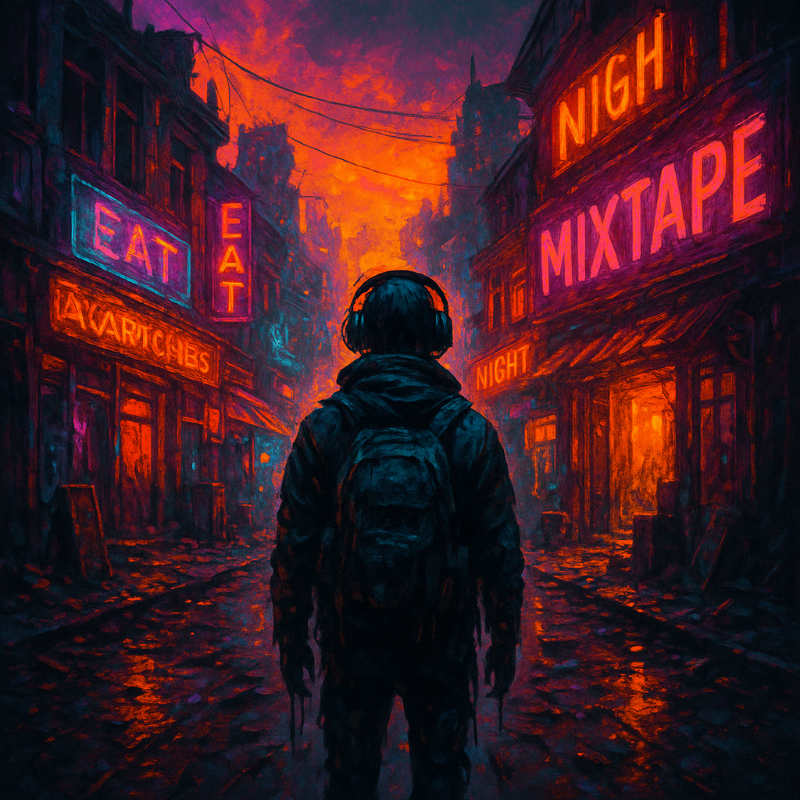
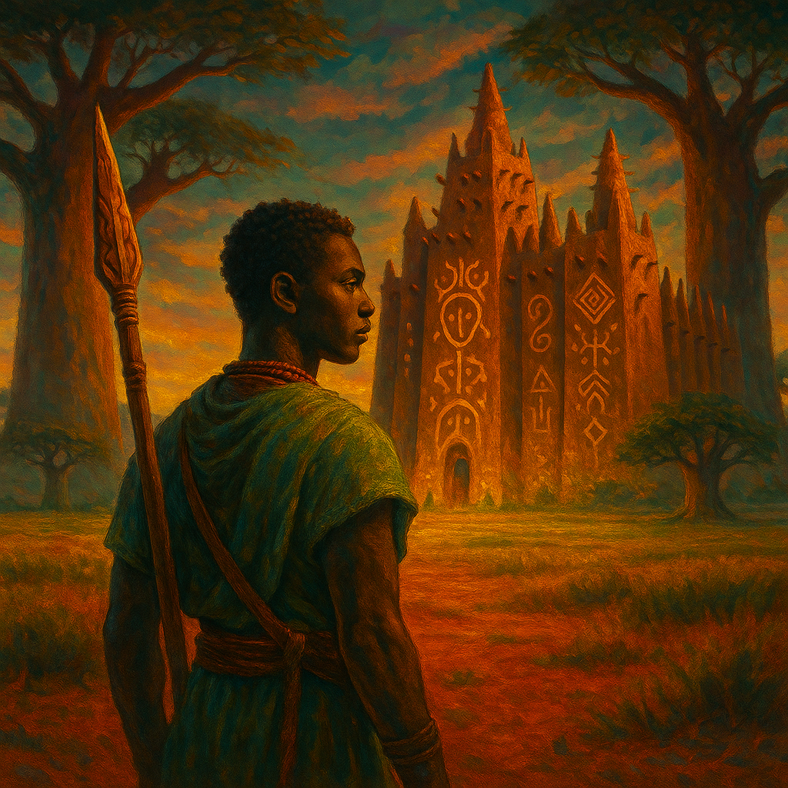
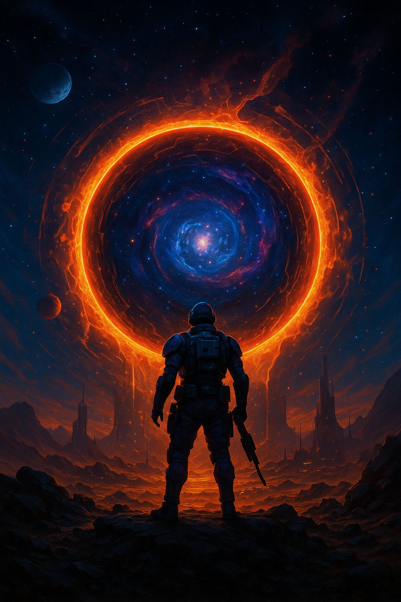

Works in Progress
Zombieland Mixtape
A survival novel laced with memory, music, and mourning.
After a viral outbreak tears through the East Coast, **Dexter must travel through an America drowned in loss**, systemic collapse, and white supremacist factions to find his family. But the zombies aren’t the only thing that evolve. Told like a mixtape—episodic, fractured, raw—this novel unspools trauma, trust, and transformation at the end of the world. The story challenges the traditional zombie narrative, focusing on human resilience over spectacle.
- Survival horror + emotional realism
- Afro-surrealist structure and cultural grief
- Core Themes: Legacy, fatherhood, racial memory, trauma adaptation
Nasir: Wisdom Lost
Set in a fictional West-African inspired kingdom, this mythic coming-of-age epic follows Nasir, a boy born into political betrayal and war. When his mother is executed and his kingdom splinters, **Nasir must navigate prophecy, trauma, and his own inner contradictions** to restore harmony to the land. A meditation on power, grief, and ancestral wisdom, told through folklore, battle, and heartbreak. This is the first book in a trilogy that explores the roots of sovereignty.
- Book I: The Weight of the River
- Book II: The Burning Crown
- Book III: The Return of the Tree
Portal
Adonis, a U.S. Marine with a mysterious ring passed down from his ancestors, discovers he is part of a cosmic lineage tasked with defending humanity from interdimensional threats. As ancient portals begin to rupture reality, **Adonis is pulled into a metaphysical war of timelines, gods, and memory**. A sci-fi fantasy saga that collides spiritual myth with military precision. The series explores the idea of colonial memory as a cosmic wound.
- Book 1: The Ring of Solomon
- Book 2: The Rift Between Worlds (in development)